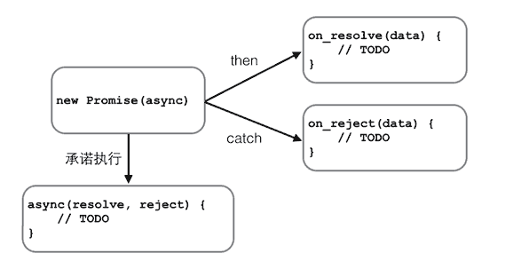

要让用户留在当前页面中，同时发出新的HTTP请求，就必须用JavaScript发送这个新请求，接收到数据后，再用JavaScript更新页面，这样一来，用户就感觉自己仍然停留在当前页面，但是数据却可以不断地更新。
最早大规模使用AJAX的就是Gmail，Gmail的页面在首次加载后，剩下的所有数据都依赖于AJAX来更新。
用JavaScript写一个完整的AJAX代码并不复杂，但是需要注意：AJAX请求是异步执行的，也就是说，要通过回调函数获得响应
在现代浏览器上写AJAX主要依靠XMLHttpRequest对象
function success(text) { var textarea = document.getElementById('test-response-text'); textarea.value = text; } function fail(code) { var textarea = document.getElementById('test-response-text'); textarea.value = 'Error code: ' + code; } //高版本浏览器 var request = new XMLHttpRequest(); // 新建XMLHttpRequest对象 //低版本浏览器 //var request = new ActiveXObject('Microsoft.XMLHTTP'); // 新建Microsoft.XMLHTTP对象 request.onreadystatechange = function () { // 状态发生变化时，函数被回调 if (request.readyState === 4) { // 成功完成 // 判断响应结果: if (request.status === 200) { // 成功，通过responseText拿到响应的文本: return success(request.responseText); } else { // 失败，根据响应码判断失败原因: return fail(request.status); } } else { // HTTP请求还在继续... } } // 发送请求: request.open(/*method*/'GET', /*url*/'/api/categories'); request.send(/*data*/); alert('请求已发送，请等待响应...');
当创建了XMLHttpRequest对象后，要先设置onreadystatechange的回调函数。在回调函数中，通常我们只需通过readyState === 4判断请求是否完成，如果已完成，再根据status === 200判断是否是一个成功的响应。
XMLHttpRequest对象的open()方法有3个参数，第一个参数指定是GET还是POST，第二个参数指定URL地址，第三个参数指定是否使用异步，默认是true，所以不用写。
注意，千万不要把第三个参数指定为false，否则浏览器将停止响应，直到AJAX请求完成。如果这个请求耗时10秒，那么10秒内你会发现浏览器处于“假死”状态。
最后调用send()方法才真正发送请求。GET请求不需要参数，POST请求需要把body部分以字符串或者FormData对象传进去。
上面代码的URL使用的是 相对路径 。如果你把它改为http://www.sina.com.cn/，再运行，肯定报错。在Chrome的控制台里，还可以看到错误信息。这是因为浏览器的同源策略导致的。默认情况下，JavaScript在发送AJAX请求时，URL的域名必须和当前页面完全一致。完全一致的意思是，域名要相同（www.example.com和example.com不同），协议要相同（http和https不同），端口号要相同（默认是:80端口，它和:8080就不同）。有的浏览器口子松一点，允许端口不同，大多数浏览器都会严格遵守这个限制。
那是不是用JavaScript无法请求外域（就是其他网站）的URL了呢？方法还是有的，大概有这么几种：
一是通过Flash插件发送HTTP请求，这种方式可以绕过浏览器的安全限制，但必须安装Flash，并且跟Flash交互。不过Flash用起来麻烦，而且现在用得也越来越少了。
二是通过在同源域名下架设一个代理服务器来转发，JavaScript负责把请求发送到代理服务器：
'/proxy?url=http://www.sina.com.cn'
代理服务器再把结果返回，这样就遵守了浏览器的同源策略。这种方式麻烦之处在于需要服务器端额外做开发。
第三种方式称为JSONP，它有个限制，只能用GET请求，并且要求返回JavaScript。这种方式跨域实际上是利用了浏览器允许跨域引用JavaScript资源：
<html>
<head>
<script src="http://example.com/abc.js"></script>
...
</head>
<body>
...
</body>
</html>
这样一来，我们如果在页面中先准备好foo()函数，然后给页面动态加一个
function refreshPrice(data) { var p = document.getElementById('test-jsonp'); p.innerHTML = '当前价格：' + data['0000001'].name +': ' + data['0000001'].price + '；' + data['1399001'].name + ': ' + data['1399001'].price; }
function getPrice() { var js = document.createElement('script'), head = document.getElementsByTagName('head')[0]; js.src = 'http://api.money.126.net/data/feed/0000001,1399001?callback=refreshPrice'; head.appendChild(js); }
则会访问http://api.money.126.net/data/feed/0000001,1399001，将返回的数据以refreshPrice（prop)执行
setTimeout(var_function,var_time_msec,var_para_of_var_function)
//等效于上面的AJAX直接修改 var ajax = ajaxGet('http://...'); ajax.ifSuccess(success) .ifFail(fail);
可以用Promise实现
function test(resolve,reject){ ... if(...){ resolve("success message"); }else{ reject("reject message"); } } var p=new Promise(test).then(function(msg){;}).catch(function(msg){;});

要串行执行这样的异步任务，不用Promise需要写一层一层的嵌套代码。有了Promise，我们只需要简单地写：
job1.then(job2).then(job3).catch(handleError);